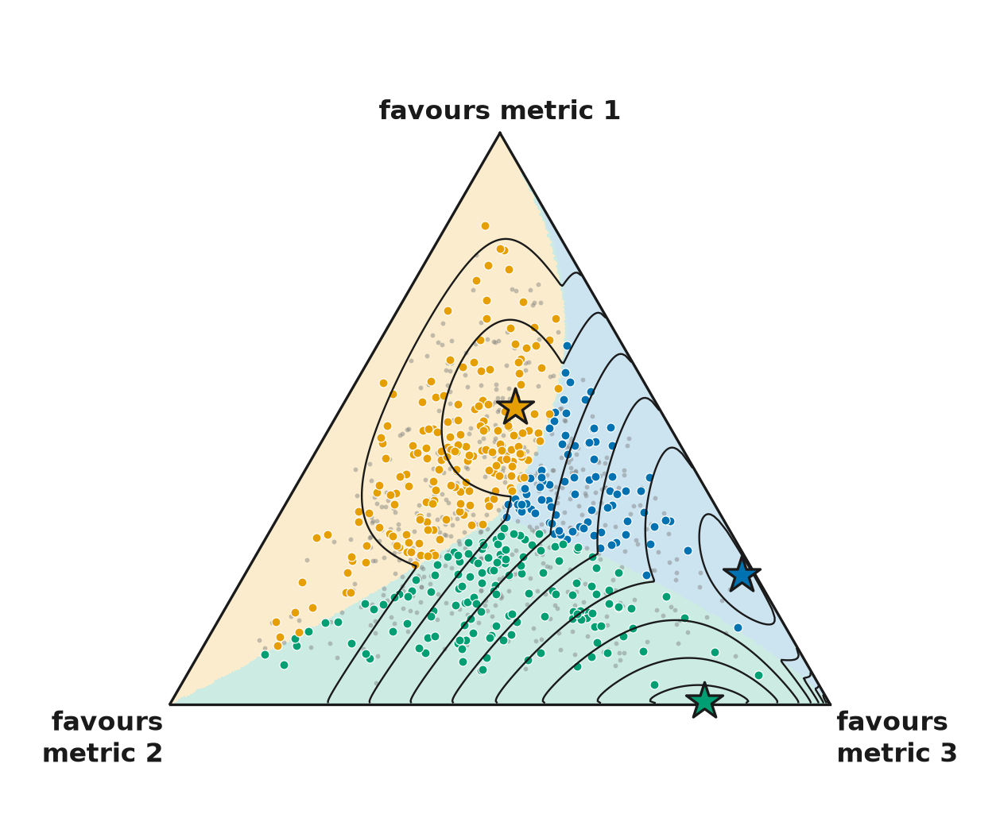
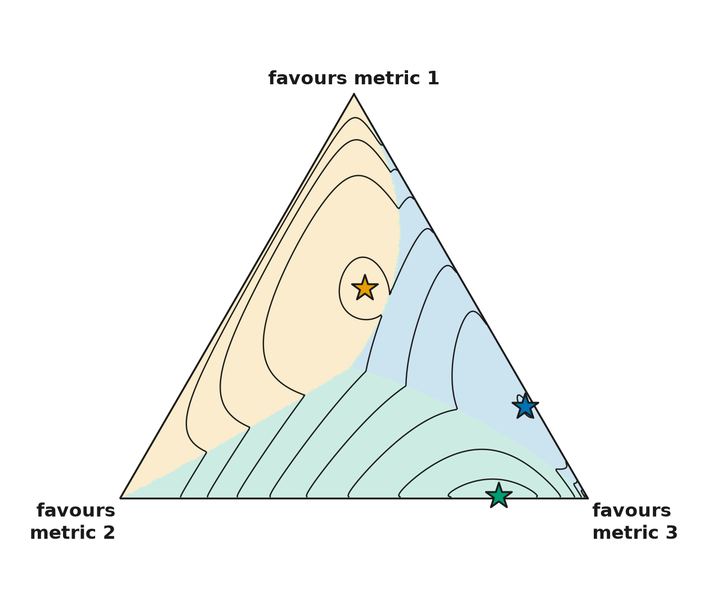
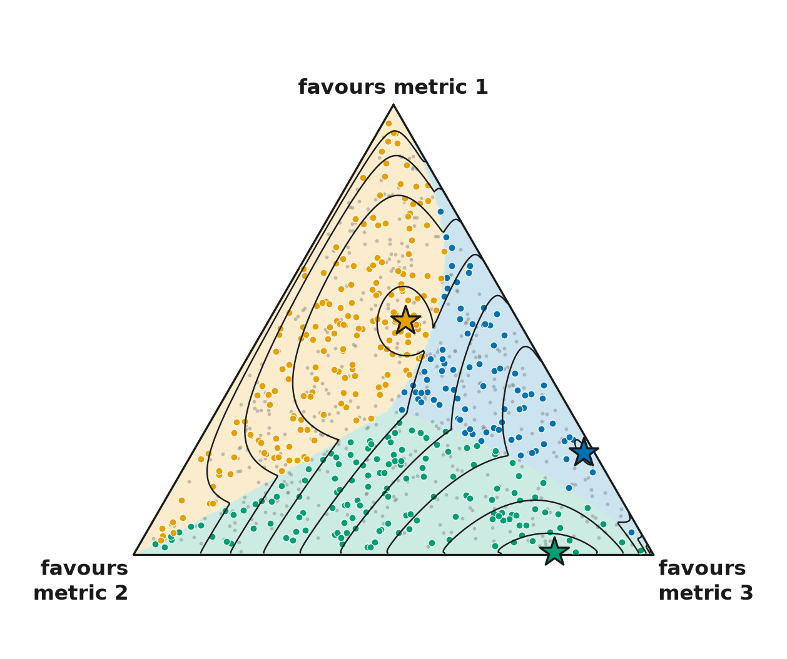

log V = log of the total + a function of the shares, exactly. The triangle shows shares, so each line joins shares of equal V at one total. Each star is a facet's exponent vector: the peak of that facet's V. Lines are at 0.97, 0.9, 0.8 ... 0.3 of the highest peak.



Index mock, Why image without lines · Index mock, Why image with lines